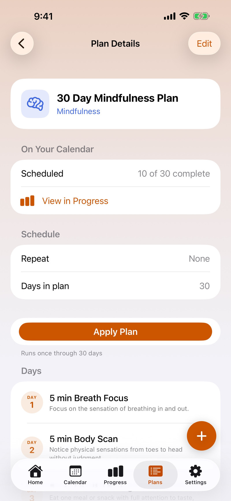

1
Pick a plan
Open the Plans tab. Bundled plans cover lifting, running, cycling, swimming and mindfulness. Tap a plan to see the details, then tap Apply Plan to put it on your calendar. You can turn on a daily reminder when you apply it.

